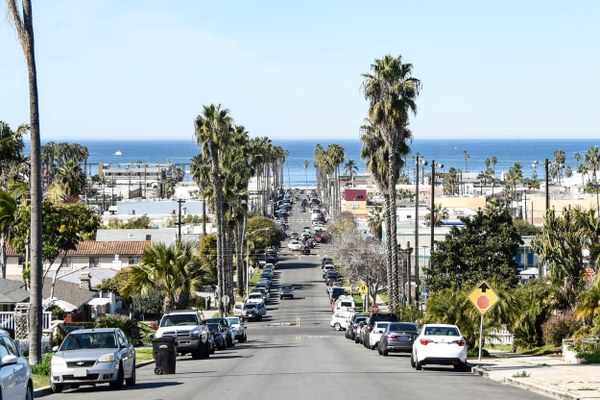
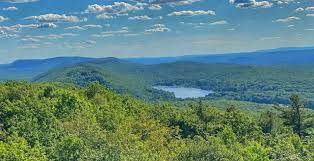
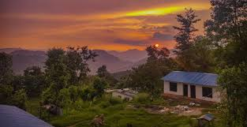
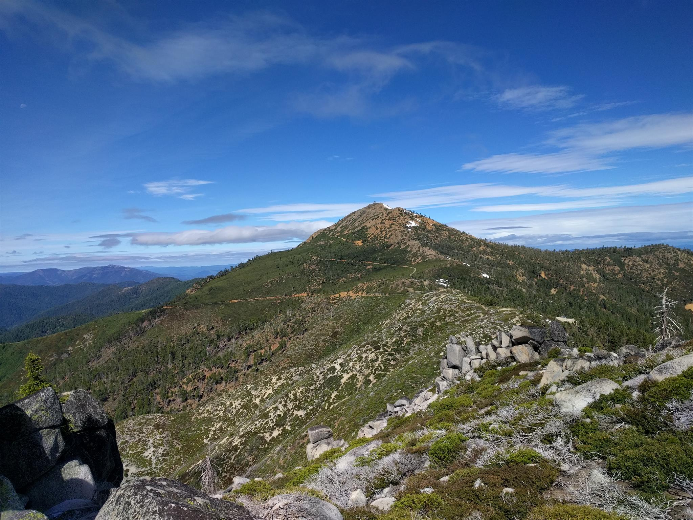
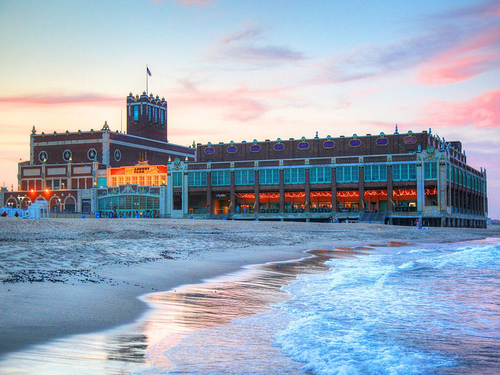

Places I've lived
San Diego, CA
This is the city in which I was born. I also moved back to San Diego in my twenties and lived there again for 5 years.
Sussex County, NJ
I grew up in the rural northwestern corner of New Jersey where there are more cows than people. I frequently refer to it as "the other New Jersey" or New Jersey's best kept secret
Brooklyn, NY
After High School I spent a year in NYC. I attended Brooklyn College for a year.
Tanahun, Nepal
I spent most of a year in Nepal volunteering at a village school called Maya Universe Academy in the foothills of a jungle.
Trinity Mountains, CA
After I returned from Nepal, I spent a year living mostly off the grid in the mountains of Northern California. I also worked as a barista at a local coffee shop.
Trinity Mountains, CA
After I returned from California (for the third time) I moved to Asbury Park, NJ. I have been living here since 2018.